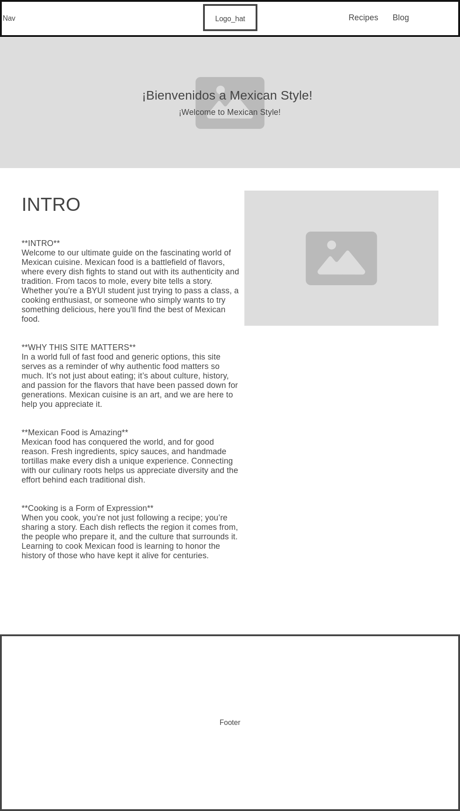
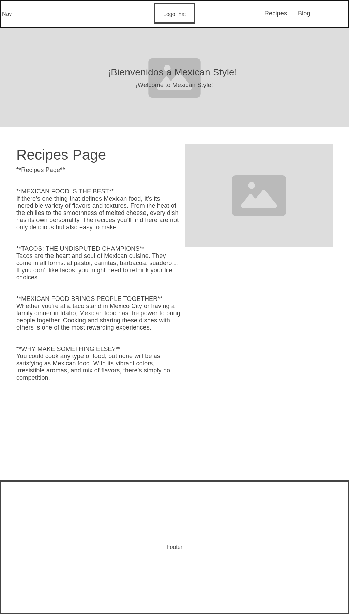
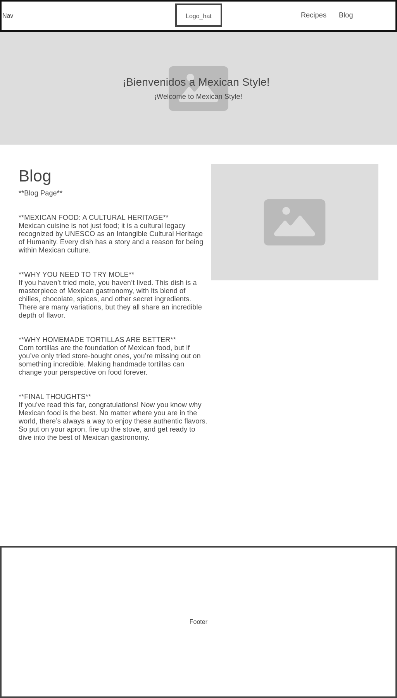

Overview
Purpose
The purpose of this site is to share the most traditional and delicious Mexican food recipes, providing users with an authentic experience of our cuisine.
Audience
This site is aimed at people interested in learning about and enjoying Mexican food, from students to expert chefs, both inside and outside of Mexico.
Branding
Website Logo
Style Guide
Color Palette
| Primary | Secondary | Accent 1 | Accent 2 |
|---|---|---|---|
Typography
Heading Font: "IM Fell French Canon SC"
Paragraph Font: Lato, Helvetica, sans-serif
Normal paragraph example
Mexican food is rich in history, culture, and flavor. The dishes vary from region to region, but they all share a common bond: the use of fresh and natural ingredients that create unique flavors.
Colored paragraph example
From tacos al pastor to enchiladas, each dish has its own story and flavor that represents the best of Mexican culture.
Navigation
Site Map
Content
Home page
Welcome to Delicious Mexican Food, a site dedicated to showcasing the best of our cuisine. Here you will find easy-to-follow recipes and useful tips to prepare traditional dishes.
Images for the home page:
Recipes
In this section, you will find authentic recipes for the most representative dishes of Mexican cuisine. From tacos to tamales, we have everything you need for a feast.
Images for the Recipes page:
Blog
In our blog, we share articles about the history of Mexican food, culinary trends, and interviews with famous Mexican chefs.
Images for the Blog page:


Wireframes
Home
This is the wireframe for the home page, which will include a banner with the best recipes, a navigation menu, and featured sections.
Recipes
On this page, we will show a list of recipes with images, ingredients, and detailed steps for preparation.
Blog
The blog will include articles with images, a list of categories, and recipe recommendations.
